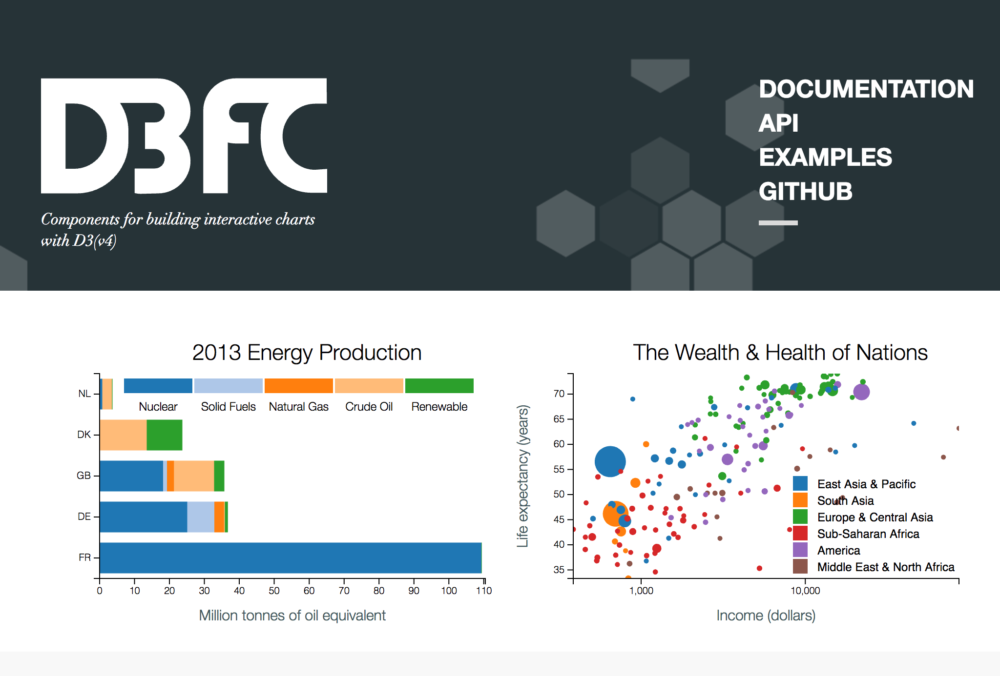
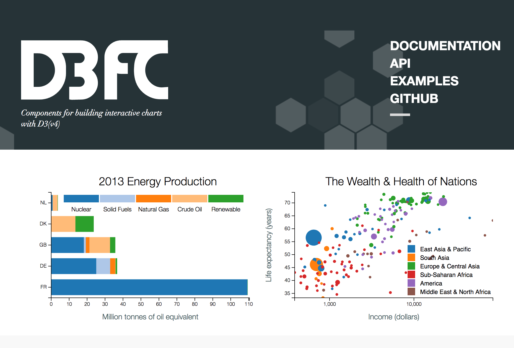
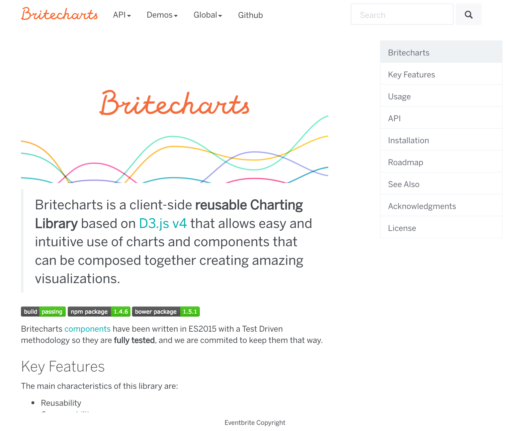
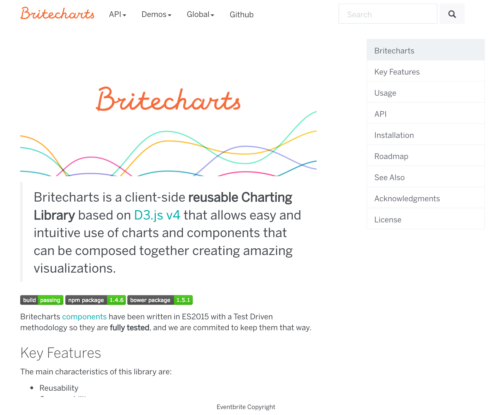
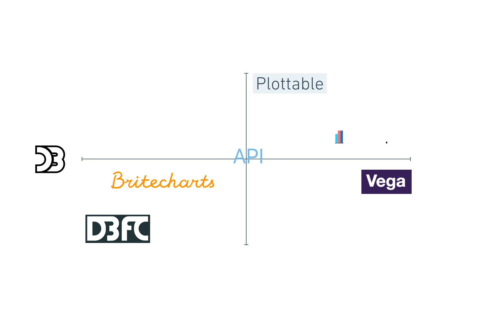
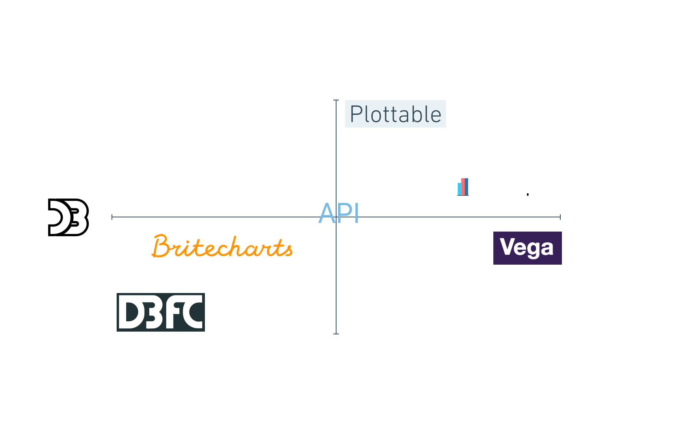

React, D3 and
the Dataviz Ecosystem
React, D3 and
the Dataviz Ecosystem
Online

Next up
- D3
- React
- React + D3
- Choosing an approach
What is D3.js?
- Data-Driven Documents
- Low level, General Purpose Visualization Library
- Manipulates data based documents
- Open web standards (SVG, HTML, CSS and Canvas)
- Allows interactions with your graphs
How does it work?
- Loads data
- Binds data to elements
- Transforms those elements
- Transitions between states
D3 Demo

D3 v4 Update
- More modular
- Improved API
- Breaking changes
- Highly adopted
D3 Data Joins
Transforms the DOM by selecting elements and joining to data
Data Join Code
g.selectAll(".bar")
.data(data)
.enter()
.append("rect")
.attr("class", "bar")
.attr("x", function(d) { return x(d.letter); })
.attr("y", function(d) { return y(d.frequency); })
.attr("width", x.bandwidth())
.attr("height", function(d) { return height - y(d.frequency); });
Data Join
Update, Enter
and Exit Pattern
Resources
D3 Patterns and
Best Practices
Component Patterns
D3 Testing
D3 is hard
D3 Libraries

 


 

 

 

What is ReactJS?
- User Interface library
- Component-based
- Fast and efficient
Reconciliation and Rendering
- The "Renderer" and the "Reconciler" are separated
- Render in Web, Native Apps and Virtual Reality
React 16 (Fiber)
- New reconciliating algorithm
- From batching DOM operations, now React can...
- Prioritize tasks
- Split into chunks and schedule
- Parallelize operations
A Cartoon Intro to Fiber by Lin Clark
React Dynamic Child Components
React Dynamic Child Components
- Unique 'key' to each child component rendered
- More efficient rendering
- Similar to D3's data joins
Reconciliation - React Docs
Commonalities
- Help us with the DOM
- Love pure functions
Challenges
- D3 creates and transforms the DOM
- React as well, and keeps track of it
- Not meant to work together
React + D3 Approaches
D3 within React
- React renders root svg element
- D3 creates chart in componentDidUpdate
- Block chart updates with shouldComponentUpdate
D3 within React
class Line extends React.Component {
componentDidMount() {
// D3 Code to create the chart
// using this._rootNode as container
}
shouldComponentUpdate() {
// Prevents component re-rendering
return false;
}
render() {
return(
<div
className="line-container"
ref={this._setRef.bind(this)}
/>
)
}
}
D3 within React
Pros/Cons
- ✓ Works fine
- ✓ Easiest when visualization is already implemented
- ✗ Not idiomatic on React
- ✗ A bit nasty
React Faux DOM
It's a way to use existing D3 tooling but render it efficiently through React with the React ethos
D3 within React the right way
React Faux DOM
import {withFauxDOM} from 'react-faux-dom';
class Line extends React.Component {
componentDidMount() {
const faux = this.props.connectFauxDOM('div', 'chart');
// D3 Code to create the chart
// using faux as container
d3.select(faux)
.append('svg')
{...}
this.props.animateFauxDOM(800);
}
render() {
<div className="line-container">
{this.props.chart}
</div>
}
}
export default withFauxDOM(Line);
React Faux DOM
Pros/Cons
- ✓ Use all D3 APIs
- ✓ Good integration with already built D3
- ✓ Server Side Rendering
- ✗/✓ Need to use React Animations
- ✗ Compatibility with D3.js plugins
- ✗ Less performant (small/medium size dataviz)
Lifecycle Methods Mapping
- Lightweight React Component Wrapper
- D3-only file with create, update and unmount methods
Integrating D3.js visualizations in a React app
Lifecycle Methods Mapping
import D3Line from './D3Line'
class Line extends React.Component {
componentDidMount() {
// D3 Code to create the chart
this._chart = D3Line.create(
this._rootNode,
this.props.data,
this.props.config
);
}
componentDidUpdate() {
// D3 Code to update the chart
D3Line.update(
this._rootNode,
this.props.data,
this.props.config,
this._chart
);
}
componentWillUnmount() {
D3Line.destroy(this._rootNode);
}
_setRef(componentNode) {
this._rootNode = componentNode;
}
render() {
<div
className="line-container"
ref={this._setRef.bind(this)}
/>
}
}
Lifecycle Methods Mapping - D3Line
const D3Line = {};
D3Line.create = (el, data, configuration) => {
// D3 Code to create the chart
};
D3Line.update = (el, data, configuration, chart) => {
// D3 Code to update the chart
};
D3Line.destroy = () => {
// Cleaning code here
};
export default D3Line;
Lifecycle Methods Mapping
Pros/Cons
- ✓ Separation of concerns
- ✓ Easy to integrate D3.js code
- ✓ Flexible, could encapsulate any chart
- ✗/✓ Adds another file
D3 for the Math,
React for the DOM
- D3 is used for math and formats
- React rules the DOM
## D3 sub-modules: DOM Related
* [Selections (d3-selection)](https://github.com/d3/d3-selection)
* [Transitions (d3-transition)](https://github.com/d3/d3-transition)
* [Axes (d3-axis)](https://github.com/d3/d3-axis)
* [Zooming (d3-zoom)](https://github.com/d3/d3-zoom)
* [Dragging (d3-drag)](https://github.com/d3/d3-drag)
* [Brushes (d3-brush)](https://github.com/d3/d3-brush)
* [Geographies (d3-geo)](https://github.com/d3/d3-geo)
* [Shapes (d3-shape)](https://github.com/d3/d3-shape)
Note:
* Selections OK
* Animations with multiple libraries
* The rest, DIY
D3 for the Math,
React for the DOM
class Line extends React.Component {
drawLine() {
let xScale = d3.scaleTime()
.domain(d3.extent(
this.props.data,
({date}) => date
))
.rangeRound([0, this.props.width]);
let yScale = d3.scaleLinear()
.domain(d3.extent(
this.props.data,
({value}) => value
))
.rangeRound([this.props.height, 0]);
let line = d3.line()
.x((d) => xScale(d.date))
.y((d) => yScale(d.value));
return (
<path
className="line"
d={line(this.props.data)}
/>
);
}
render() {
<svg
className="line-container"
width={this.props.width}
height={this.props.height}
>
{this.drawLine()}
</svg>
}
}
D3 for the Math,
React for the DOM
Pros/Cons
- ✓ Consistent with the React way
- ✗ A lot of work upfront
- ✗ D3 Reimplementation of certain parts
- ✗ Limited to SVG rendering
Reference
React + D3 Libraries
Ecosystem
- Non-maintained libraries
- Not easy to keep up with D3 and React
- D3 v4 cleaned up the field

Linechart Code
VictoryJS
- Easy to get started
- Zoom and Voronoi
- React Native option

Linechart Code

Recharts
- Really well tested
- Charts plus legend, tooltip and brush
- Great docs

Linechart Code

Nivo
- Different rendering options
- Animations with react-motion
- Great Docs

Linechart Code
VX
- Similar to a "D3.js for React"
- Flexible about the animation library
Linechart Code

Britecharts React
- Helps to render D3 in React components
- No Server-side Rendering
Choosing an approach
Choosing criteria

- Well tested
- D3 V4
- Great docs
- Long term investment?
- Needs to be done ASAP?
- Basic charts?
- One-off work?
- Highly customized?
- Limited budget?
- Need training?
Conclusions
- D3 and React can work together
- They both move fast
- Hard to decide
Data-Joins Resources

 http://tinyurl.com/d3-react-lib-comparative
http://tinyurl.com/d3-react-lib-comparative